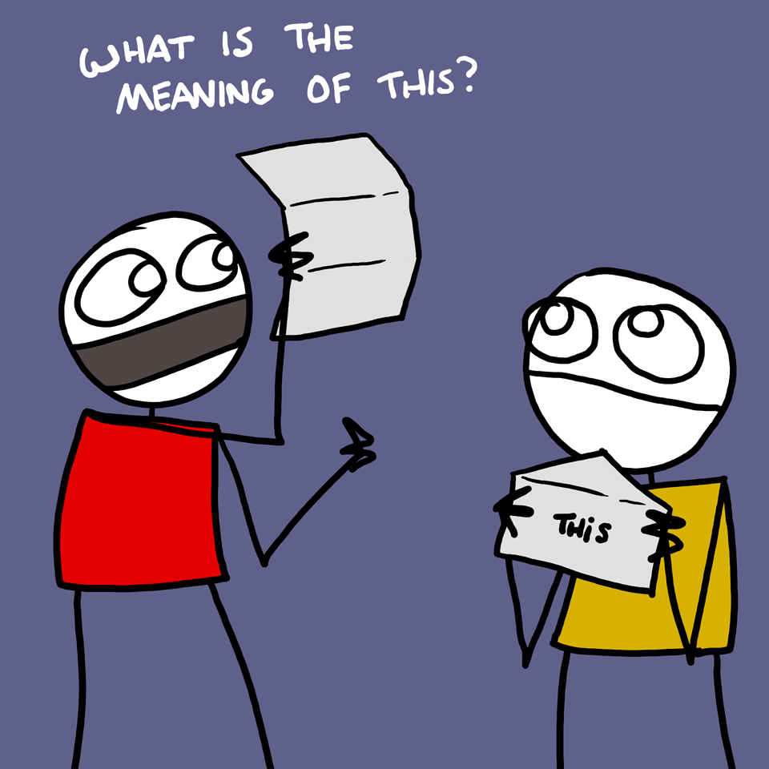
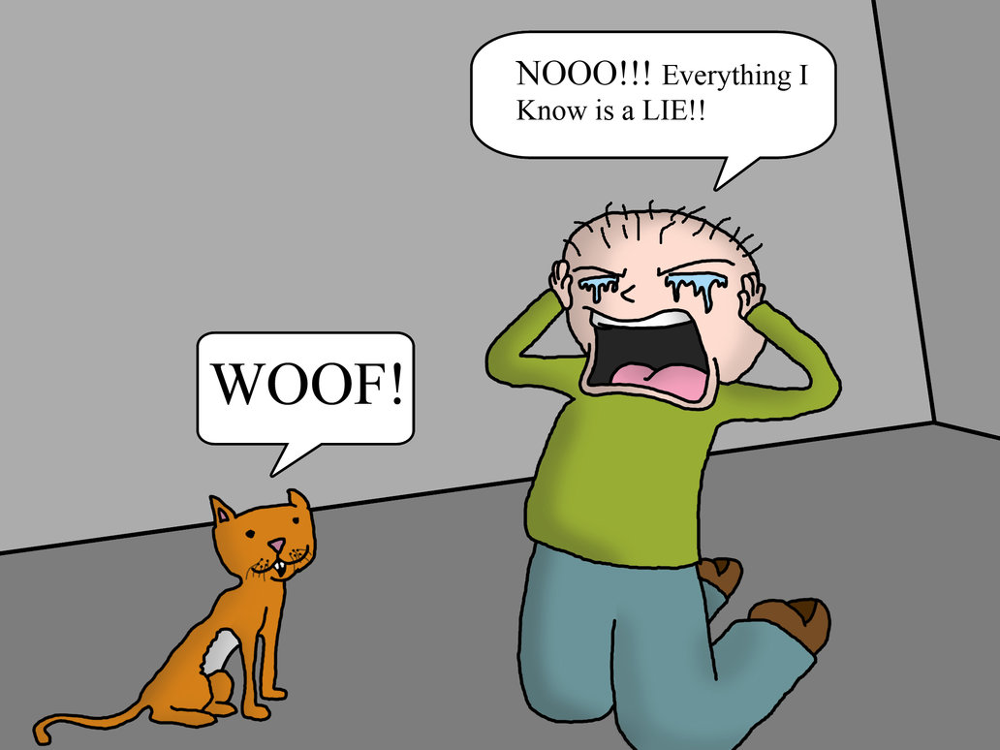

Ahh, this. How contextual you are! Whether it is the English language or JavaScript, this can often be easily misconstrued. Can you tell me what the second this is this sentence is referring to? Or how about the first? Assuredly, we can conclude that the word this in English does not always refer to the same thing.

"Great Wes, thanks for the grammar lesson...So how does the this keyword work in JavaScript?"
I'm glad you asked, astute reader! The this keyword in JavaScript is one of the tricky features of the language that people often stumble over, and justifiably so. There is so much information on this out there on the interwebs to trip up on that it is sometimes hard to know what to believe or how you can be assured that you are covering all your cases. I hope this article will work to assuage all uncertainties and fears surrounding this, and provide a valuable resource for JS developers young and old.
Getting Comfortable With This
Something we need to remember when referencing the JS keyword this is when it gets bound to something. The this keyword can only be bound to an object at CALL TIME. With this knowledge, what do you think this is bound to in the case below?
var func = function(){
console.log(this);
};
Did you catch yourself? This was actually a trick question. This hasn't been bound to anything yet, because the "func" function was never invoked! In other words, the interpreter would never have even looked inside of the curly braces in func, and the console.log statement would never have been reached. This is a good way to remember that this will only be evaluated at CALL TIME.
So now that we know the rules about when we can bind this to something, how do we know what we can bind it to?
Let There Be Light
Luckily for us, the JS gods have bestowed us with some simple rules for knowing what this should be bound to at call time. Try not to deceive yourself over these rules! If you simply follow these five principles, you too will become a master of this.
1) Global Reference
console.log(this);
When the keyword this appears in the global context, (and it is not enclosed within a function), the pattern is considered to be a global reference. In a global reference this is bound to the global object, which in the browser is window.
2) Free Function Invocation
var func = function() {
console.log(this);
};
func();
In the case where this appears within a function that is not a method on an object and that function is invoked, we call this pattern a free function invocation. In this pattern, the this keyword also gets bound to the global object (window in the browser).
3) Method Invocation
var hello = "I'm a window washing boy!";
var boy = {
speak: function(){
alert(this.hello);
},
hello: "I'm a real boy!"
};
boy.speak();
This one is beautiful. If a method is invoked on an object, then any references to this that occur within the execution context of the method are bound to the object to the left of the dot at call time. This pattern is known as method invocation. In the case above, this would be bound to the boy object, since it is to the left of the dot when speak is invoked. What will be alerted in the case above?
4) Call or Apply
var cat = {
talk: function(){
alert(this.message);
},
message: "Meow!"
};
var dog = {
message: "Woof!"
};
cat.talk();
cat.talk.call(dog);
When using the .call or .apply function methods, you are given the power to explicitly state what you want to bind to the keyword this, where the first argument passed into either .call or .apply is the target of what gets bound to this at call time. In the example above, the this value is bound to the dog object in the call invocation. To learn more about call and apply Function methods and their differences, I recommend heading over to MDN...
Function.prototype.call
- Function.prototype.apply

5) The new keyword
var Animal = function(){
console.dir(this);
console.log(typeof this);
this.isAlive = true;
};
var wolf = new Animal();
console.log(wolf.isAlive);
When a function is invoked with the new keyword in front of it, the JavaScript interpreter assumes you are trying to create a new instance of a class using a constructor function. Therefore, under the hood JS is creating a new object and binding the this keyword to that new object. In the case above, a new object is created and is stored in the wolf variable.
The console.dir statement will give you access to the wolf object, and the console.log statement will print out "object" to the console since this is bound to a new instance of an object. Lastly, console.log(wolf.isAlive) prints out true, solidifying the idea that this is bound to the new object created by the Animal constructor function.
And that's it! It seems preposterous, but understanding these five rules will actually give you all the information you need to be able to make the right conclusions as to what any instance of this may refer to. Good luck and may your understanding of this be ever expanded!